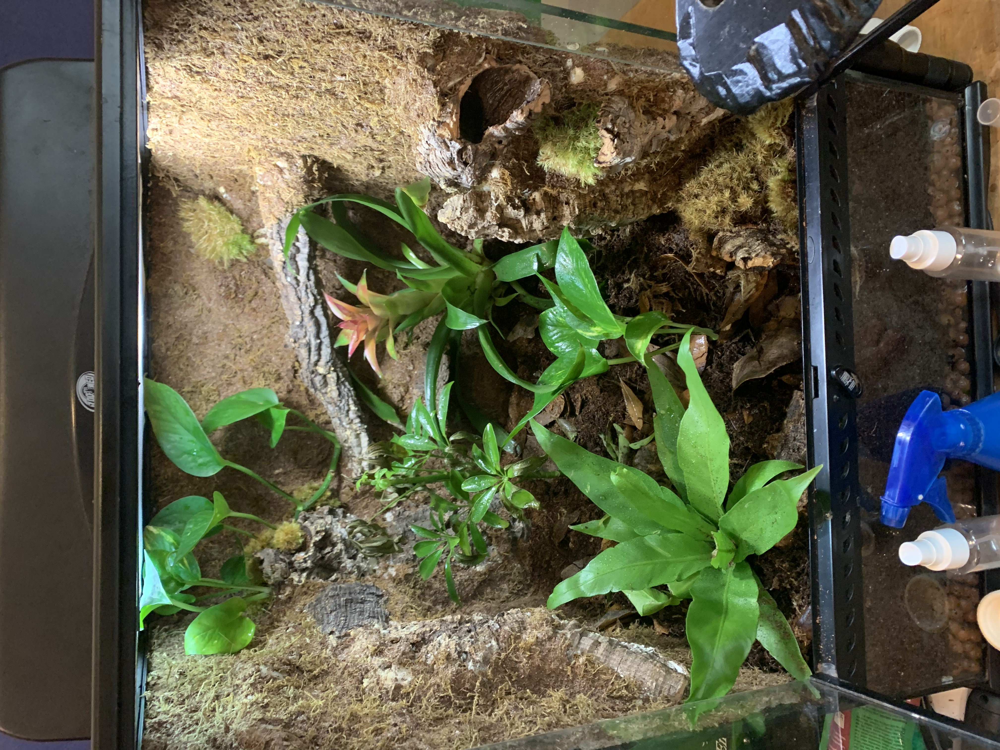
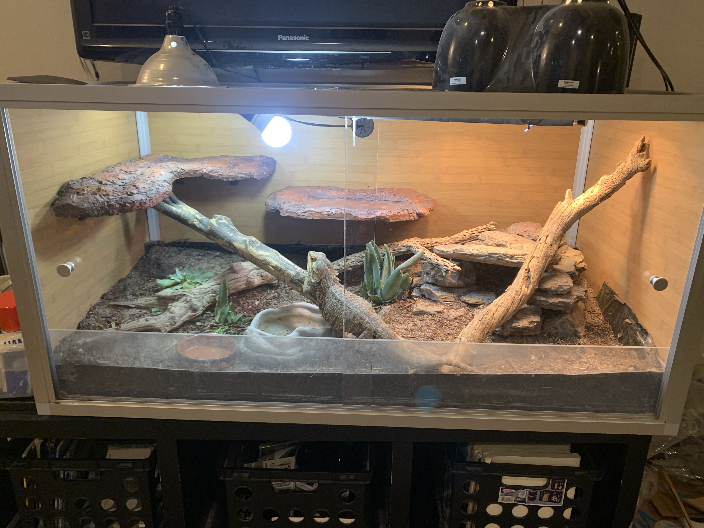
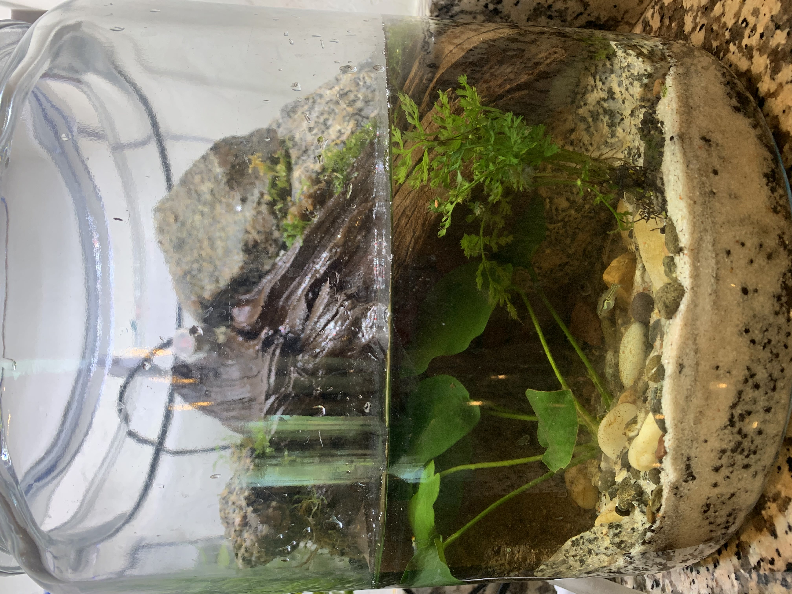
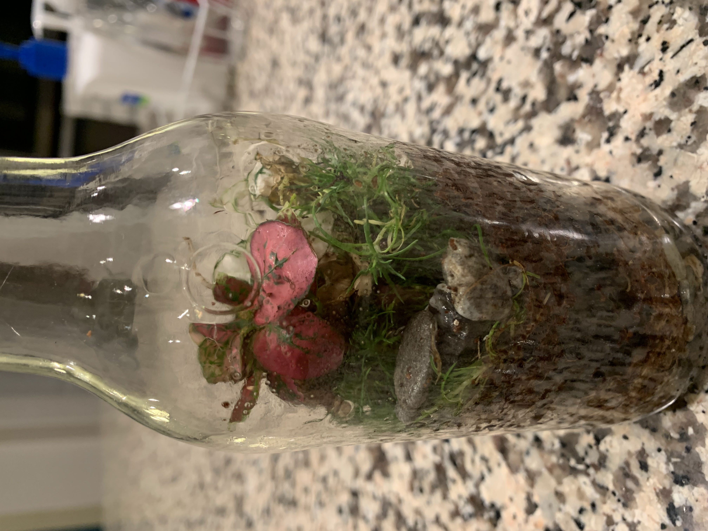

Since the beginning of the COVID-19 pandemic, I've been interested in micro-sized ecosystems. The one's that I've built range from aquatic environments to miniature forest ecosystems.
Tropical Vivariums

My crested gecko vivarium
I built this vivarium and another one like it in the summer of 2021 for my crested gecko. The background was made with a combination of cork bark, expanding foam, Gorilla Glue, and 3D printed net pots. I topped it with coconut fiber for a naturalistic vibe and planted various plants to make it bioactive and for other climbing surfaces. Eventually, I made some vines from rope, silicone, and coconut husk and hung those across the vivarium (not shown here).
I really enjoyed these builds and making them come together with both plants and animals. Having a small slice of the jungle in my bedroom has definitely been a joy.
Desert Vivarium

My bearded dragon vivarium
In the summer of 2020, we got a beareded dragon as our first family pet, and I was so intrigued that it became primarily me that took care of him. Eventually I decided he needed a bigger home, researched possible options, and learned I could make a naturalistic desert vivarium. This was the result. The substrate is made of primarily coconut fiber and sand, and various succulents and cacti were included for visual esthetic and occasional snacking. The hide went through multiple iterations of various materials, the final result being rip rap stone secured with silicone. The branches were found outside and sterilized in the oven. Modifications, such as the painted foam shelves shown here, were made over the course of the next few years as well.
Aquarium

My aquarium for Endler's livebearer
The summer of 2023 before I moved to college, I asked my mother if I could turn the jar in the corner of the counter (at that point a paludarium, explanation below) into an aquarium with a little fish for her. She agreed, and I embarked on a quest to learn how to create a low-cost mini aquarium. The result is this little underwater world that houses an Endler's livebearer, a snail, and some shrimp. This was made with stones and wood that I found outside and sterilized using the oven and a bleach solution, with a sand substrate and a few plants. I also made a filter by placing a pump, filter foam, and activated carbon in a plastic jar with holes in it. The tube coming out the top from the pump supplies the waterfall feature.
Other Terrariums

Small bottle terrarium
Since I began making living mini ecosystems in 2020, I've made a variety of terrariums, as well as the paludarium below. A paludarium is a cross between a terrarium and an aquarium, so it has both land and water parts. This paludarium, shown below, later became the above-mentioned aquarium after I decided to get a fish. Shown are some pictures of a few terrariums that I've made.